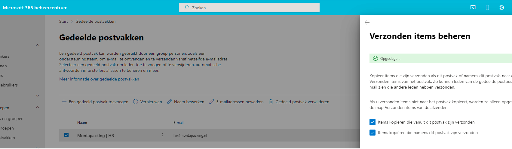

Send en deleted items gedeelde mailbox
Standaard komen verzonden en verwijderde mails van een gedeelde mailbox in de persoonlijke mailbox terecht. Om dat op de werkplek te voorkomen zijn de volgende regels in het loginscript toegevoegd:
- reg add "HKEY_CURRENT_USER\Software\Microsoft\Office\16.0\Outlook\Preferences" /v DelegateSentItemsStyle /t REG_DWORD /d 1 /f
- reg add "HKEY_CURRENT_USER\Software\Microsoft\Office\16.0\Outlook\Preferences" /v DelegateWastebasketStyle /t REG_DWORD /d 4 /f
Voor een medewerker die lokaal outlook gebruikt dienen bovenstaande registry-keys lokaal toegevoegd te worden.
Bovenstaande settings kunnen uitgerold worden met de RMM taak "OutlookDelegation".
Het kan ook voor een gehele mailbox ingesteld worden.
Dit doe je dan vanuit het Office 365 Admin Center (https://portal.office.com/adminportal/home#/SharedMailbox)
Ga naar:
- Teams en Groepen
- Gedeelde postvakken
- Selecteer het postvak en zet de 2 vinkjes aan volgens onderstaand voorbeeld.

Het kan ook met behulp van Powershell
voor e-mails die als gedeeld postvak worden verzonden
set-mailbox
voor e-mails die namens het gedeelde postvak worden verzonden
set-mailbox